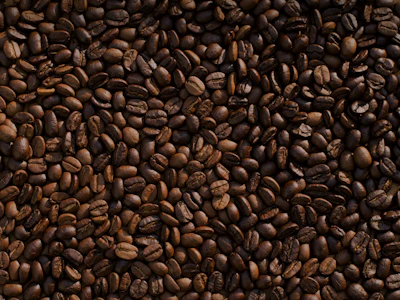
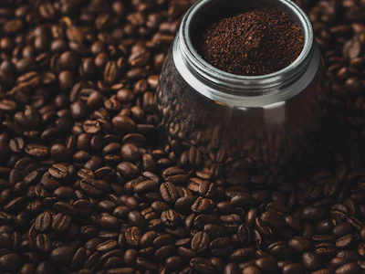
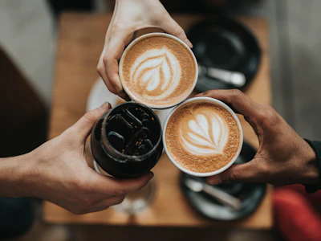

Descubre nuestros cafés, seleccionados cuidadosamente para ofrecerte un sabor auténtico,
un aroma irresistible y la esencia del mejor café peruano.
Nuestra Selección de Cafés

1. Geisha de Perú
Cultivado a 1,850 msnm en las zonas cafetaleras de los Andes peruanos.
Es una variedad de café de especialidad reconocida por su aroma delicado, sabor elegante y sus características florales y frutales.
Proceso: Lavado con fermentación controlada de 24 horas
Nota de cata: Jazmín, flor de azahar, miel de abeja, durazno y cítricos
Puntuación SCA: 88.5 puntos
Precio sugerido:S/ 52.00 (bolsa de 250g)

2. Café Tostados
Cultivado entre 1200 y 1800 msnm en las zonas cafetaleras de los Andes peruanos.
Sus granos son seleccionados y tostados cuidadosamente para resaltar su aroma,
cuerpo y dulzor natural. Ese rango es representativo de buena parte del café peruano de altura.
Proceso: Tostado artesanal en pequeños lotes
Nota de cata: Chocolate, caramelo, frutos secos y toque de nuez
Puntuación SCA: 85.0 puntos
Precio sugerido:S/ 38.00 (bolsa de 250g)

3. Momentos con Café Peruano
Cultivado a 1.650 msnm en las zonas cafetaleras de Junín.
Un café de aroma envolvente y sabor equilibrado, perfecto para compartir
y disfrutar en preparaciones calientes o frías
Proceso: Lavado, secado natural y tostado medio
Notas de cata: Cacao, caramelo, vainilla y frutos secos
Preparaciones: Latte, cappuccino y café frío
Puntuación SCA: 86.0 puntos
Precio sugerido:S/ 40.00 (bolsa de 250g)
Como preparar cafe tostado y molido
Para preparar café a partir de granos ya tostados y molidos,
debes usar una proporción adecuada de una cucharada sopera de café
(unos 7 gramos) por cada taza de agua y calentar el agua sin
que llegue a hervir por completo.
Mide los ingrendientes: Usa una cucharada de café molido por cada taza de agua que desees preparar
Calienta el agua: Pon a calentar agua limpia o filtrada hasta que alcance una temperatura cercana a los 90°C (antes de los grandes borbotones de hervor)
Agrega el café: Utiliza aproximadamente 10 g de café molido por cada 180 ml de agua.
Realiza la preparación: Coloca el café en una cafetera, filtro o prensa francesa y vierte el agua caliente.
Deja reposar: Espera entre 3 y 4 minutos, dependiendo del método.
Sirve y disfruta: Tómalo recién preparado para apreciar mejor su aroma y sabor.
Guía De Conversación De Grano
La conservación adecuada de los granos se basa en
mantenerlos secos, limpios y sanos para evitar el ataque de hongos, bacterias, insectos y roedores